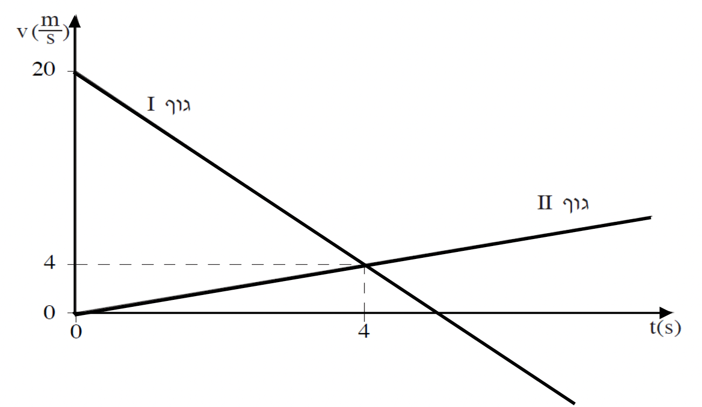

שאלה
בתרשים שלפניכם משורטטים שני גרפים, המתארים את המהירויות כפונקציה של הזמן עבור
שני גופים I ו-II. הנעים על שתי מסילות מקבילות וסמוכות. מהירות ימינה מוגדרת כחיובית.

היעזרו בגרפים שבתרשים וענו על הסעיפים הבאים:
בחרו במשפט הנכון מבין משפטים 1-3 שלפניכם, והעתיקו אותו למחברותיכם.
- שני הגופים נעים שמאלה.
- גוף II נע ימינה, גוף I נע ימינה בהתחלה ולאחר מכן נע שמאלה.
- גוף I נע שמאלה וגוף II נע ימינה.
נמקו את בחירתכם. (4 נקודות)
חשבו את התאוצה של גוף I ואת התאוצה של גוף II. (4 נקודות)
האם במהלך התנועה של שני הגופים יש יותר מרגע אחד שבו גודל מהירותם שווה? אם כן - מצאו את הרגעים. אם לא - נמקו. (6 נקודות)
נתון כי בזמן t = 0 שני הגופים נמצאים בנקודה x = 0.
חשבו את המרחק בין שני הגופים בזמן שבו המהירות של גוף I שווה לאפס. (5 1/3 נקודות)
מתי והיכן נפגשים הגופים? (7 נק')
סרטטו גרף של מקומם של שני הגופים כפונקציה של הזמן, מרגע t = 0 ועד שהגופים נפגשים. במערכת צירים אחת. (7 נקודות)